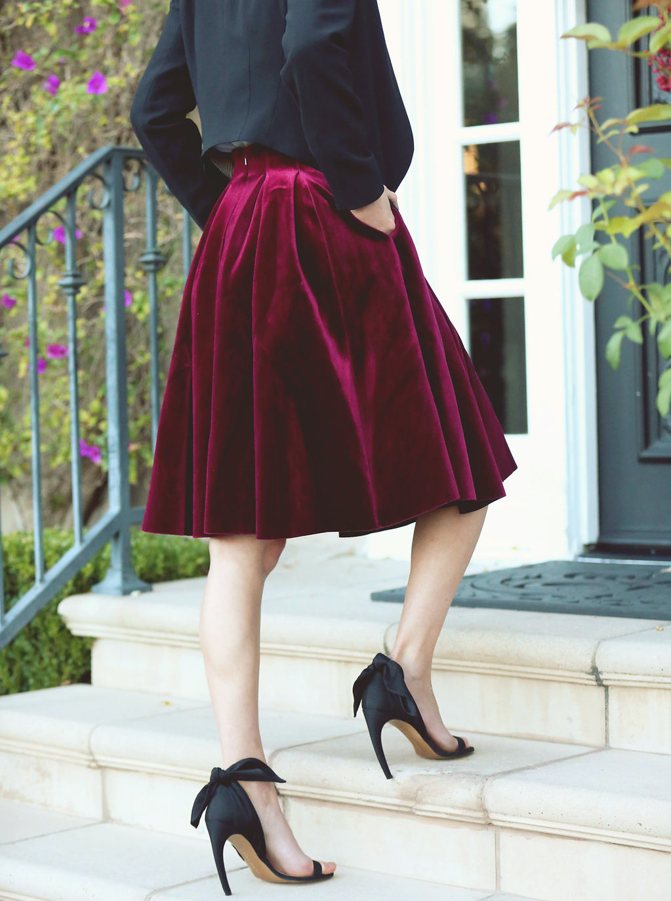

Rendering velvet (and other clothing material)
Summary: We hope to render velvet and hopefully simulate wind pushing the fabric around. If we manage to get our
velvet looking relatively realistic, we hope to try rendering other materials like denim and satin.
Team: Jessica Dong, Kelly Li, Kaiona Martinson, Jennifer Yang
Goals and Deliverables
- What we plan to deliver
- As a baseline, we plan to render some sort of velvet skirt which will blow in pre-programmed wind. We will
measure the quality / performance of our system visually, since we want our velvet skirt to look pretty
realistic (see picture).

- What we hope to deliver
- In our dreams, we hope to render other materials in addition to velvet, like satin and denim
(likely also in skirt form). We hope that we will be able to show these materials react to the
pre-programmed wind. Similar to our plans listed above, we will measure the quality / performance of
our system visually.
- Questions to answer:
- What is the density of velvet / what parameters define velvet?
- How does velvet move in the wind?
- How does velvet move compared to other materials?
Schedule
- Week 1
- Wrap up our research
- Render basic velvet model (piece of velvet lying in space, maybe lying on the sphere like in
clothsim)
- Week 2
- Wrap up basic velvet rendering
- Render a skirt shape
- Potentially render velvet skirt blowing in the wind
- Week 3
- Finalize rendering skirt blowing in the wind
- Week 4
- Final code wrap-up / debugging
- Work on presentation + final write-up
- Potentially render other materials like denim and satin (eek pt 2)
Resources